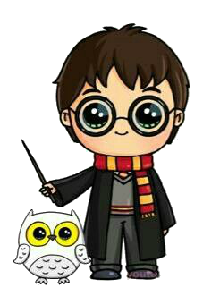
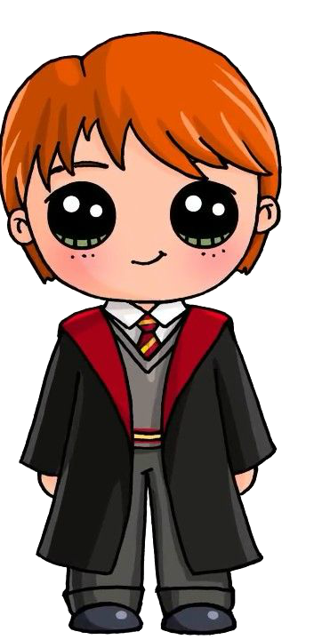

O primeiro livro da saga, é onde Harry descobre que é um bruxo e embarca para Hogwarts pela primeira vez. Lá ele conhece Ron Weasley e Hermione Granger e encontra um desafio sobre uma misteriosa pedra e alguém que deseja roubá-la;
Em seu segundo ano Harry é avisado para não retornar a Hogwarts, mas acaba desobedecendo. Lá ele descobre um segredo terrível e planejamentos de ataques aos nascidos trouxas. Se encontra com Tom Riddle, o Lorde das Trevas antes de ter se tornado quem é.
Um prisioneiro fugiu de Azkaban pela primeira vez em céculos, e está atrás de Harry. E também tem os demwentadores que insistem em perseguir Harry e o afetam mais que os outros.
Em seu quarto ano, Harry Potter volta a Hogwarts e é selecionado para participar do torneiro tribruxo. Há também um traidor em Hogwarts, que fará de tudo para Voldemort retornar ao poder.
Em seu quinto ano, Harry está sendo protegido a todo momento. Depois que Voldemort voltou ao poder, tudo está pior. Há também uma nova diretora em Hogwarts, Dolores Umbridge, que irá mudar toda a escola.
Em seu sexto ano, Harry Potter suspeita que Voldemort está tramando algo ainda pior. E agora há um alunos em Hogwarts com uma missão dada pelo próprio Voldemort.
Harry, Ron e Hermione vão atrás das orcruxes que destruirão Voldemort. Mas o perigo é grande e há comensais da morte por toda parte.
 